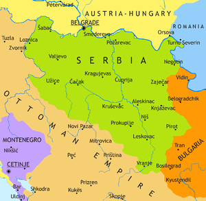

Este o țară situată la răscrucea Europei Centrale cu Europa de Sud-Est, în sudul Câmpiei Panonice și în Balcanii centrali.Statul suveran se învecinează cu Ungaria la nord, cu România la nord-est, cu Bulgaria la sud-est, cu Macedonia de Nord la sud, cu Croația și cu Bosnia și Herțegovina la vest și cu Muntenegru spre sud-vest. Țara revendică o frontieră cu Albania prin teritoriul disputat Kosovo. Serbia numără aproximativ 7 milioane de locuitori.Capitala sa, Belgrad, se numără printre cele mai vechi și mai mari orașe din sud-estul Europei.
Teritoriul a fost locuit din paleolitic, iar migrațiile slave în Balcani dintre secolele V-VII au dus la formarea câtorva state suverane în Evul Mediu timpuriu, state care uneori au recunoscut în mod nominal suzeranitatea bizantină, francă și maghiară.
La începutul secolului al XIX-lea, Revoluția sârbă a dus la apariția statului național ca prima monarhie constituțională din regiune, care și-a extins ulterior teritoriul.După pierderile omenești dezastruoase din Primul Război Mondial și unificarea ulterioară a fostei coroane Habsburgice a Voivodinei (și a altor teritorii) cu Serbia, țara a cofondat, împreună cu alte popoare slave sudice, Iugoslavia, stat ce a existat în diferite configurații politice până la războaiele iugoslave din anii 1990. În procesul destrămării Iugoslaviei, Serbia a format o uniune statală cu Muntenegru care a fost însă dizolvată pe cale pașnică în 2006.În 2008,parlamentul provinciei Kosovo a declarat în mod unilateral independența acestui teritoriu, și a fost recunoscut de majoritatea țărilor membre ONU.
Serbia este membră a ONU, Consiliului Europei, OSCE, PpP, OCEMN, CEFTA și în curs de aderare la OMC.Începând din 2014,țara negociază aderarea la UE cu perspectiva aderării la Uniunea Europeană până în 2025.Din 2007, Serbia aderă formal la politica de neutralitate militară. O economie cu venituri medii spre ridicate,dominată de sectorul serviciilor, urmat de sectorul industrial și agricultura, țara se situează relativ sus pe indicele dezvoltării umane,indicele progresului social,și pe indicele global al păcii.
Dovezile arheologice de așezări din paleolitic pe teritoriul Serbiei actuale sunt rare.Un fragment de maxilar uman a fost găsit în defileul Sićevo (Mala Balanica) și se crede că are o vechime de până la 525.000–397.000 de ani.Cam pe la 6.500 î.e.n,în perioada neolitică, culturile Starčevo și Vinča au existat în Belgradul modern sau în apropierea acestuia și au dominat o mare parte a Europei de Sud-Est(precum și părți din Europa Centrală și Asia Mică).Două importante situri arheologice locale din această epocă,Lepenski Vir și Vinča-Belo Brdo,există încă în apropierea malurilor Dunării.
În timpul Epocii Fierului, tracii, dacii și ilirii au fost găsiți de grecii antici în timpul expansiunii lor în sudul Serbiei moderne, în secolul al IV-lea î.e.n.; punctul de nord-vest al imperiului lui Alexandru cel Mare era în zona orașului Kale-Krševica.Tribul celtic al lui scordiscilor s-a așezat în întreaga zonă în secolul al III-lea î.e.n. și a format un stat tribal, construind mai multe fortificații, inclusiv capitala de la Singidunum (actualul Belgrad) și Naissos (actualul Niš), însă au sfârșit prin a fi asimilați de masa traco-ilirică.
Romanii au cucerit o mare parte a teritoriului în secolul al II-lea î.e.n. În 167 î.e.n. a fost înființată provincia romană Illyricum; restul a fost cucerit în jurul anului 75 î.e.n., formând provincia romană Moesia Superior; regiunea modernă Srem a fost cucerită în 9 î.e.n.; iar Bačka și Banatul în 106 e.n., după Războaiele Dacice. Drept urmare, Serbia contemporană se extinde integral sau parțial pe mai multe foste provincii romane, între care Moesia, Pannonia, Praevalitana, Dalmația, Dacia și Macedonia.
Principalele orașe din Moesia Superioară (și din împrejurimi) erau: Singidunum (Belgrad), Viminacium (astăzi vechiul Kostolac), Remesiana (astăzi, Bela Palanka), Naissos (Niš) și Sirmium (astăzi, Sremska Mitrovica), care a fost una din capitalele romane în timpul Tetrarhiei.Șaptesprezece împărați romani s-au născut în zona Serbiei moderne, țara fiind pe locul doi doar după Italia contemporană. Cel mai faimos dintre aceștia a fost Constantin cel Mare, primul împărat creștin, care a emis un edict de toleranță religioasă în întregul Imperiu.Când Imperiul Roman a fost divizat în 395, cea mai mare parte a Serbiei a rămas sub Imperiul Roman de Răsărit, în timp ce părțile sale din nord-vest au fost incluse în Imperiul Roman de Apus. De la începutul secolului al VI-lea, slavii, prezenți în tot Imperiul Bizantin în număr mare, s-au amestecat cu populația băștinașă (daci, iliri, traci romanizați) și au asimilat-o, din acest amestec de popoare rezultând slavii sudici actuali, printre care și sârbii.
Sârbii albi, un trib slav care s-a stabilit în Balcani între secolele V-VII, a înființat Principatul Sârb înaintea secolului al VIII-lea. În 822 se afirma că sârbii locuiau cea mai mare parte a Dalmației Romane, teritoriul lor acoperind ceea ce este astăzi sud-vestul Serbiei și părți ale țărilor vecine. Între timp, Imperiul Bizantin și Țaratul Bulgar dețineau alte părți ale teritoriului. Creștinismul a fost adoptat de conducătorii sârbi pe la 870, iar până la mijlocul secolului al X-lea statul sârb se întindea de la Marea Adriatică prin Neretva, Sava, Morava și Skadar. Între anii 1166 și 1371, Serbia a fost condusă de dinastia Nemanjić (a cărei moștenire este deosebit de prețuită), sub care statul a fost ridicat la rang de regat (și, pentru scurt timp, de țarat) și episcopia sârbă la rang de arhiepiscopie autocefală (prin efortul lui Sava, sfântul protector al Serbiei). Monumentele din perioada Nemanjić supraviețuiesc în multe mănăstiri (mai multe fiind în Patrimoniul Mondial) și fortificații.În aceste secole, statul (și influența) sârbilor s-a extins semnificativ. Partea de nord, Voivodina, a fost dominată de Regatul Ungariei. Perioada cunoscută sub numele de căderea Țaratului Sârb a însemnat fragmentarea în ducate a statului odinioară puternic, culminând cu bătălia de la Kosovo Polje (1389) împotriva Imperiului Otoman aflat în ascensiune. Despotatul Sârb a fost în cele din urmă cucerit de către otomani în 1459. Amenințarea otomană și cucerirea din cele din urmă a dus la mari migrații ale sârbilor către vest și nord.